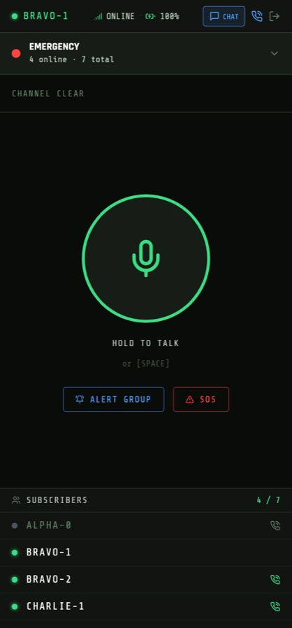
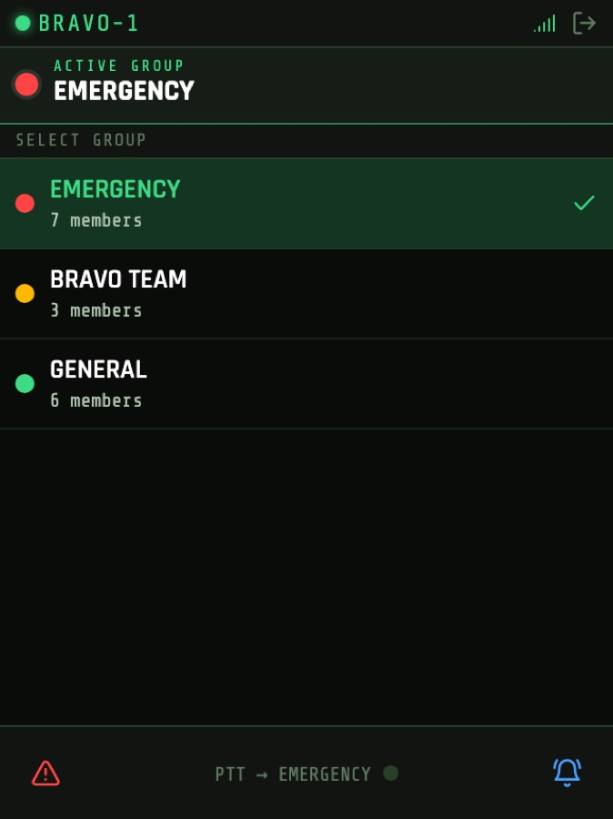
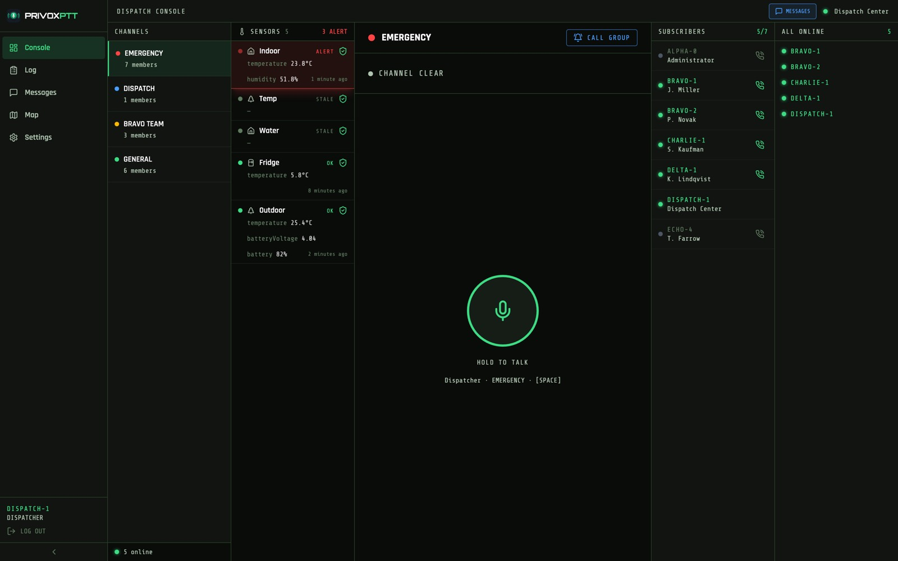
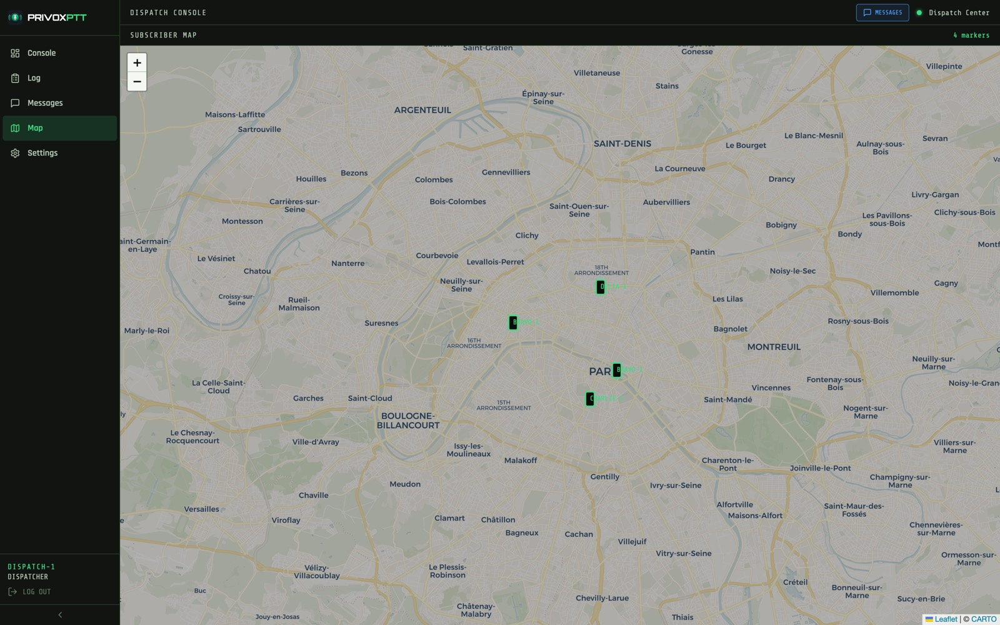
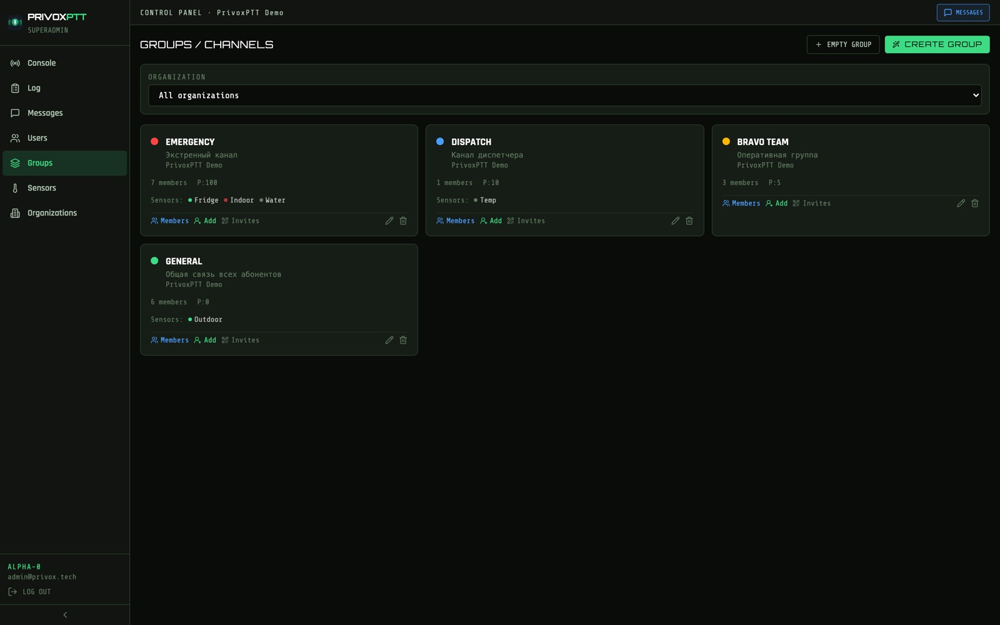

Нажал и говоришь
Классический PTT: удержал кнопку — тебя слышит вся группа. Канал занят одним говорящим, остальные слышат, кто в эфире.
Эта дисциплина не ограничение, а смысл: в отличие от конференц-звонка, здесь никогда не говорят трое разом.
ГОЛОС · ДАТЧИКИ · ДИСПЕТЧЕРИЗАЦИЯ
Рация, которая работает на всём: на телефоне, в браузере и на настоящей рации. И которая слышит не только людей, но и объект.
Голос уходит всей группе мгновенно. Без набора номера и без ожидания ответа.
Датчики температуры, протечки, движения шлют тревогу в тот же канал, где работают люди.
Диспетчер видит, кто на связи, где находится и что происходит на объекте — на одном экране.
01 · СВЯЗЬ
Обычная рация умеет одно — говорить в канал. В реальной работе этого мало: иногда нужен один человек, иногда вся смена, а иногда — среди ночи.
Классический PTT: удержал кнопку — тебя слышит вся группа. Канал занят одним говорящим, остальные слышат, кто в эфире.
Эта дисциплина не ограничение, а смысл: в отличие от конференц-звонка, здесь никогда не говорят трое разом.
Отдельный приватный разговор с конкретным человеком — как обычный телефонный звонок, оба говорят одновременно.
Остальная группа этого не слышит и не занимает канал.
Одна кнопка — и телефон каждого участника звонит по-настоящему: в кармане, в сумке, ночью на столе, даже если приложение закрыто.
Человек отвечает и сразу оказывается в эфире.
Отдельная кнопка тревоги уходит всей организации, минуя границы групп. Вызов диспетчера — адресно тому, кто сегодня на смене.
Сигнал SOS не глушится ничем: ни расписанием, ни настройками группы.
Расстояние не имеет значения. Это не радиостанция с ограниченным радиусом: связь идёт через сервер по обычному интернету. Люди в одной группе могут находиться в разных городах и странах — на объекте, в командировке, на другом континенте — и слышать друг друга так же, как если бы стояли рядом. Нужен только интернет, любой: проводной, Wi-Fi или сотовый.
Кого сейчас можно дозваться — видно заранее. Система различает три состояния, и диспетчер не тратит время на попытки достучаться до выключенного телефона.
02 · УСТРОЙСТВА
Не нужно закупать парк раций, чтобы начать. Достаточно телефонов, которые у людей в карманах. А там, где нужна именно рация — она тоже подключается в ту же систему.
| Устройство | Для кого | Что даёт |
|---|---|---|
| Телефон Android | Линейный персонал | Полноценная рация с приложением. Звонок будит спящий телефон, работает уведомление о сообщениях. |
| iPhone | Линейный персонал | То же самое. Входящий вызов поднимает нативный экран звонка даже на заблокированном экране. |
| Браузер | Диспетчер, руководитель | Пульт на компьютере: карта, список смены, эфир, чаты. Ставить ничего не надо. |
| Рация Inrico T320 | Поле, склад, стройка | Настоящая рация с аппаратной кнопкой PTT и крестовиной. Управление одной рукой, в перчатке. |

ТЕЛЕФОН
Большая кнопка разговора, список групп и состав смены с признаком, кто сейчас на связи.

РАЦИЯ T320
Экран 240×320 под управление одной рукой: крестовина выбирает канал, аппаратная кнопка говорит.
Человек с рацией, человек с телефоном и диспетчер за компьютером находятся в одной группе и слышат друг друга. Никаких шлюзов и переходников.
Каждому участнику печатается карточка с персональным QR. Отсканировал камерой — и он в эфире: без логина, пароля и поиска нужной группы.
Карточки печатаются листом или сохраняются в PDF, чтобы разослать в мессенджере.
03 · ДАТЧИКИ И ТРЕВОГИ
Это то, чего не умеет ни одна обычная рация. Датчик — такой же абонент системы: когда что-то идёт не так, он поднимает тревогу в том же канале, где работает смена.
Сервер сам опрашивает датчик по его обычному интерфейсу. Прошивку менять не нужно — оборудование остаётся как есть.
Устройство может и само отправлять показания, если так удобнее.
У каждого датчика собственные границы: холодильнику — от 2 до 8 градусов, складу — влажность не выше 70%.
Задаётся минимум, максимум или оба сразу.
Сигнал поднимается в момент перехода через порог, а не каждые пятнадцать секунд, пока проблема держится.
Иначе к тревогам привыкают и перестают на них смотреть.
Три состояния датчика, которые видит диспетчер:
«Молчит» — отдельная тревога, и это принципиально. Датчик, переставший отвечать, опаснее датчика с плохими показаниями: холодильник может размораживаться уже час, а на экране всё ещё висит последняя нормальная температура. Система считает пропажу данных таким же поводом поднять людей.
Куда уходит тревога:
| Канал | Кому | Когда полезно |
|---|---|---|
| Пульт диспетчера | Дежурной смене | Карточка датчика мгновенно краснеет на общем экране. |
| Push на телефоны | Группе, к которой привязан датчик | Ночью, в выходной, когда за пультом никого нет. |
| Telegram | Руководителю, подрядчику | Тем, кому не нужен доступ в систему, но нужно знать о происшествии. |
04 · ПУЛЬТ ДИСПЕТЧЕРА
Пульт — это место, где сходится всё остальное: люди, объект и переписка. Диспетчеру не нужно переключаться между вкладками, чтобы понять обстановку.
Метки абонентов на карте обновляются в реальном времени, пока люди двигаются. В подсказке — позывной и скорость.
Скорость важнее, чем кажется: видно, машина едет или стоит уже двадцать минут. Отправить на вызов ближайшего — вопрос одного взгляда, а не обзвона.
Слева каналы, справа состав смены с признаком достижимости, отдельной панелью — датчики объекта. Тревога краснеет здесь же, не уводя с экрана.
Диспетчер говорит в любую группу, не входя в неё.
Выходы на связь и уходы записываются. Разобрать смену постфактум — кто был доступен в момент происшествия — можно и на следующий день.
Групповые и личные сообщения открываются рядом с эфиром. Адрес, номер машины или фотография поломки не теряются в голосовом потоке.


Карта и координаты — не слежка, а инструмент диспетчера. Передачу координат можно отключить конкретному человеку: подрядчику или водителю на личном автомобиле. Право выдаётся отдельно от права говорить и писать.
05 · УПРАВЛЕНИЕ
Связь на объекте — это не только «слышно или нет». Это ещё и вопрос, кто имеет право говорить, кто видит чужие координаты и что происходит с доступом уволенного человека.
Абонент говорит в своих группах. Диспетчер слышит все и говорит в любую. Администратор заводит людей и группы. Владелец видит всю систему.
У группы можно задать дату начала и окончания. Смена, мероприятие, подряд на месяц — по окончании канал закрывается сам.
История переписки при этом остаётся: разобрать смену можно и после её завершения.
Участнику можно разрешить слушать, но не говорить; писать, но не делиться координатами. Наблюдатель, стажёр, подрядчик — каждому своё.
Сезонному работнику доступ выдаётся до конкретной даты и гаснет сам. Потерянное устройство отключается одним действием — вместе с активными сессиями.

Действия администраторов — заведение людей, выдача и отзыв приглашений — записываются отдельно от эфира.
Групповые чаты и личная переписка, история на сервере, фотографии и документы до 10 МБ. Номер, адрес или фото поломки голосом не передашь.
06 · КОМУ ЭТО НУЖНО
Общее у всех этих сценариев одно: людям надо быстро дозваться друг друга, а объекту — быстро дозваться людей. Чем дороже минута простоя или пропущенной тревоги, тем очевиднее выигрыш.
ОХРАНА И БЕЗОПАСНОСТЬ
Смена на территории, обходы, посты. Нужна мгновенная связь и кнопка тревоги, до которой дотянешься не глядя.
ТОРГОВЛЯ И ОБЩЕПИТ
Здесь датчики окупаются быстрее связи: одна размороженная камера стоит дороже годового обслуживания системы.
СТРОИТЕЛЬСТВО И ПРОМЫШЛЕННОСТЬ
Шум, перчатки, каски. Нужна аппаратная кнопка и связь, работающая на территории без разговоров про тарифы.
ЖКХ И ЭКСПЛУАТАЦИЯ
Аварийные бригады, разъезды по адресам, дежурства. Датчики в подвалах и серверных предупреждают до звонка жильцов.
ЛОГИСТИКА И ТРАНСПОРТ
Водители в разъезде, кладовщики в цеху, диспетчер на связи со всеми.
МЕРОПРИЯТИЯ
Персонал набирается на два дня, а связь нужна сразу и без обучения.
Отдельно про сезонных и подрядчиков. Обычно именно они создают проблему: людей набирают на месяц, а доступы остаются навсегда. Здесь срок задаётся при заведении — и гаснет сам, без чьей-либо памяти и дисциплины.